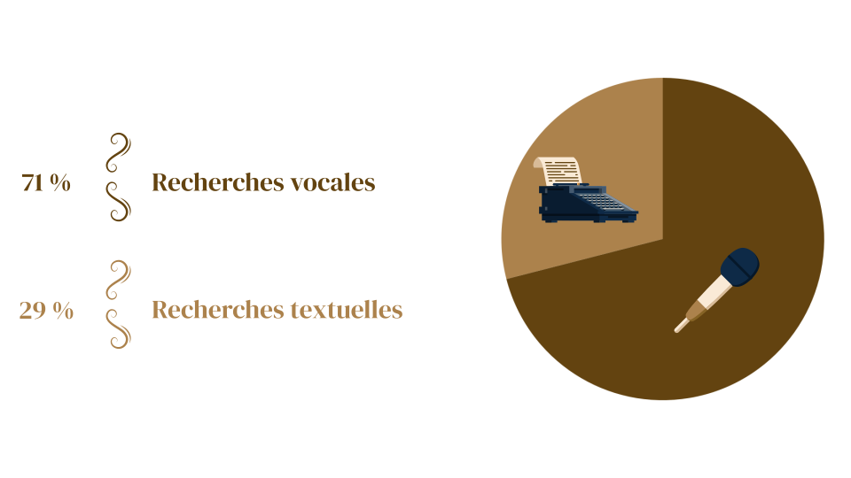
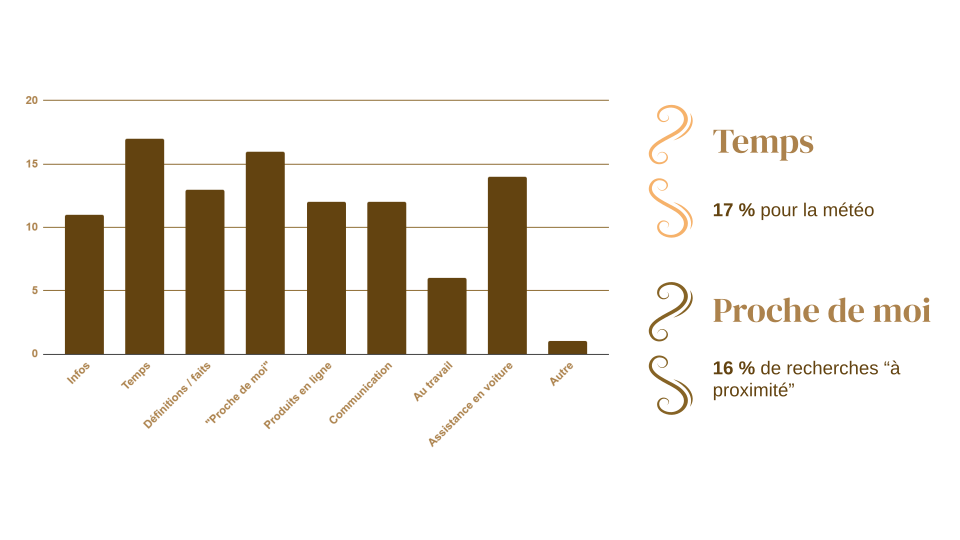

72% des consommateurs américains sont équipés d'un
assistant vocal. C'est un chiffre qui montre l'intérêt énorme pour
cette technologie, aux Etats-Unis. En France,
20 millions d'habitants utilisent des assistants
vocaux, ce qui représente plus de 50% des
consommateurs, et 77% d'entre eux déclarent que
l'assistant vocal améliore leur vie.
En terme d'utilisation, il faut comparer la recherche vocale à la
recherche textuelle, qui est le mode classique de recherche utilisé
par les internautes initialement. Là encore, le résultat montre
l'intérêt de la population pour les assistants vocaux, car
71% des recherches sont vocales, d'après une étude
réalisée auprès d'un panel de consommateurs américains. L'aspect
pratique de l'assistant vocal semble prendre le dessus sur la
recherche textuelle, qui prend plus de temps et requiert l'usage des
mains.

Alors, à quoi sert l'assistant vocal ? Quelles sont les recherches
réalisées avec ce dernier ? Une étude réalisée auprès d'un panel de
consommateurs américains montre des résultats assez homogènes, avec le
plus souvent des recherches sur la météo, qui concernent
17% des recherches vocales, ou des recherches du type
"Proche de moi", pour 16% des recherches vocales.
